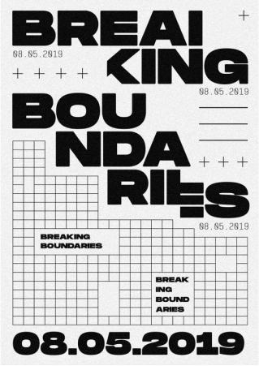

FUORISALONE EXPERIMENTAL MICROSITE
Capturing the essence of the Brera Design District through an experimental interactive site.
Project Role
UX Researcher
Prototype Developer
Project Duration
8 Weeks
Project Tools
Figma
After Effects
Project Teamates
Clarisse Faye Tan
Julia Robledano
Hazel Hau
Hazel Hau

Milan, Italy
An 8 week long project tasked with the creation of an interactive microsite mockup for the Fuorisalone Milan Design Week. Decisions needed to be backed by content research, justified by design precedents, and driven by a clear art direction.
Milan, a metropolis in Italy's northern Lombardy region, is a global capital of fashion and design. Home to the national stock exchange, it’s a financial hub also known for its high-end restaurants and shops.
01.
CURRATING AN EXPRESSIVE INTERFACE
We started by building design principles inspired by Dan Friedman and constrained by Ellen Lupton’s principles. This created the basis for our art directions which we would test through implementing them on posters.
Precise inconsistency
Disrupting text consistency to confront excessive negative space
Breaking Boundaries
Breaking the grid to reveal its underlying structure
Driving direction
Overlapping grids to drive a dynamic composition

POSTER SNAPSHOT:
In order to test our precedents, we created several iterations on posters. Each poster featured an independent art direction. After we finalized a direction that we liked, we created graphical mockups in order to test the directions flexibility on different canvas’s.

Examples of posters I created during our exploration of an art direction.
02.
BUILDING THE WEBSITE
We aim to communicate Fuorisalone’s purpose to challenge traditional design form through Milan’s famous Brera District. Italy’s Radical Design Movement in the 1960s was used to gather designers and related works to communicate this theme.
wanted users to have fun and be engaged when moving through the site. Interactions were dedicated to creating a highly sensory and immersive user experience which simulates the user moving through the bustling district before attending the Fuorisalone. The website was driven by 2 key traits.
Moving Lines
Continious formation of lines through and between pages to simulate the user walking through the district
The Map
A drag to explore map which physically situates the users in a literal representation of the Brera district.


Building the map
Our most ambitious website feature -- the map. Introdcuing unity into the composition, the map united the lines on the grids, giving them a distinct purpose. Each line was connected to another line to form the body of the map. We were able to meticulously monitor each line’s adherence to the map through combing and locking them into one giant Figma frame.
Quite possibly the largest artboard we've ever made (made of 8 different artboards)
03.
INTERACTION HIGHLIGHTS
Interactions were drawn from precedents that encouraged user driven exploration within the copies of the website, enforced by the linear progressions of guiding lines. Interactions were derived from that of a map, and strived similar characteristics on traditional maps.

Ambassador Page
Each Section of this page includes a different interaction. Hovering over the blank boxes plays a video while hovering over the text causes the space to fill with color.
Brera's Timeline Page
The formation of the line drives movement and progression through the page. The controlled color fill and text being pushed in by the lines encourages site progression.

Guiding Lines
Hovering over an item’s name causes its corresponding image to appear. The individual focus on works parallels items being viewed chronologically in a physical gallery space.

The Interactive Map
Scrolling in reveals the street in context of the larger map, giving the user a sense of their location on the microsite.